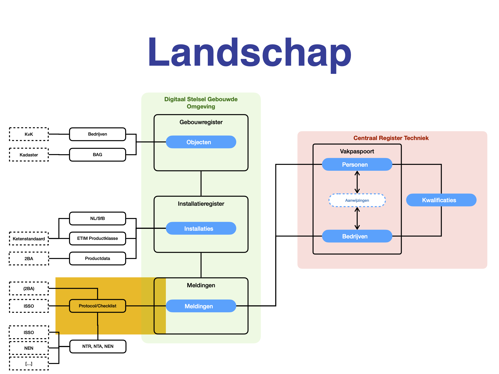

Architecture & Models
The chart (Dutch) below provides an overview of the systems that together cover the installation branch. The FGO Forms project will introduce a new system to centrally store forms (the structure, not the filled form data) in such a (non-agnostic) way that other developing companies can re-use it in their software without re-implementing them by hand (yellow in the chart).
Forms (protocol/checklist)
The main entity will be the ‘Form’ (Protocol, checklist etc). In essential a simple set of questions regarding a system installed in an object (eg. building). These forms are defined by experts or expert groups represented by for instance Techniek Nederland or ISSO.
Regulations (BRL, NTR, NTA, NEN, ISO)
Most of these forms are created with regulations in mind, or even created to fully comply with these regulations.
Filled out forms (meldingen)
The filled out forms are quite critical most of the times. Installation companies are in many cases forced by law to fill out these form and prove to authorities that they did. Currently there isn’t one central storage, but plans have been made to introduce something like that in the (near) future.
Systems and Installation (installaties)
A form is filled out for or in relation to a installation of combination of installations (system). The might be a gas connection entering a building, a central heating system or a deck of solar panels. Please note that a system might consist of multiple products together (central heating might be multiple boilers cascaded, solar panels are seldom just one panel etc). Part of the form should be repeated for every element in the form.
NL/SFB classification
There is a Dutch classification standard for describing types of installations and product. It’s a determination to with each level becoming more specific. Level one is ‘heating’, ‘cooling’ etc, level two can be ‘central’, ‘local’ etc, and the deepest can be type of fuel used. See https://ketenstandaard.nl/standaard/nl-sfb/.
ETIM classification
A second standared for product classification is ETIM. Where NL/SFB is focussed mainly on creating groups of products, ETIM also aims at defining all properties of products in a standardised way. See https://www.etim-international.com/.
Product data (stored in 2BA)
Actual information on products (non-installed) can be found in the 2BA database. It holds a rich set of products with all their features (in ETIM) described, making it easy to uniformly enter information on the installation that is being inspected. The product information is provided to 2BA by the manufactures themselves and therefore quite accurate. This data can be used to prefill forms. See https://2ba.nl/nl/.
Objects (objecten / panden / werkadressen)
An installation is by definition a product that has been installed in an Object. Most of the times an Object will be a building, but it could also be for instance a meadow (solar panels). Objects in the Netherlands are registered by the Kadaster and kept in a database called BAG. Each Object (and subobject) is document with a unique BAG ID. See https://www.kadaster.nl/zakelijk/producten/adressen-en-gebouwen/bag-api-individuele-bevragingen.